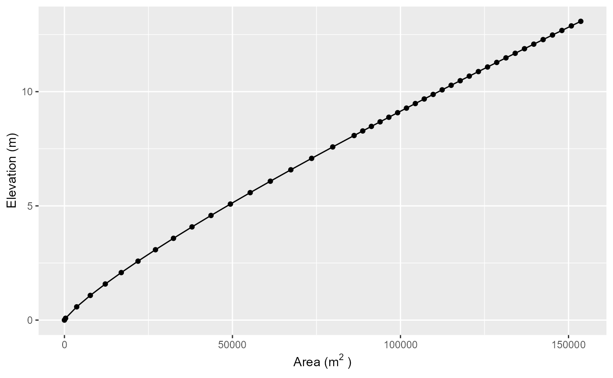

Summary
The AEME package hosts three one-dimensional hydrodynamic models: the DYnamic REservoir Simulation Model (DYRESM), the General Lake Model (GLM), and the General Ocean Turbulence Model (GOTM, which has been adapted for closed basins for application to lakes and reservoirs). The models can be coupled to their corresponding water quality models, the DYRESM-CAEDYM (Computational Aquatic Ecosystem Dynamics Model), GLM-AED (Aquatic Ecosystem Dynamics Model), and GOTM-WET (Water Ecosystem Tool).
Key aspects of the AEME package include:
Defined S4 class for
aemeobjectsConfiguration of models from common and standardised inputs
Standardised calibration, manipulation and visualisation
This vignette provides an overview of the AEME framework, the three models, and the ensemble approach. For detailed information on data inputs and the S4 structure, see the AEME Inputs vignette. For a practical tutorial, see Setting up AEME for a new lake.
The Three Models
AEME integrates three well-established one-dimensional (1D) lake models, each with distinct computational approaches and strengths. Understanding the differences helps in selecting appropriate models and interpreting ensemble results.
DYRESM-CAEDYM
DYnamic REservoir Simulation Model - Computational Aquatic Ecosystem DYnamics Model
History and Development
DYRESM was developed in the 1980s at the University of Western Australia and Centre for Water Research. It pioneered the Lagrangian layer approach for lake modeling. CAEDYM was later developed to add comprehensive biogeochemical capabilities.
Physics and Computational Approach
- Lagrangian layers: Water parcels move vertically through the water column
- Variable layer thickness: Layers can split or merge based on stratification
- Layer-following approach: Particularly effective for tracking water masses in reservoirs
- Time-step: Adaptive, typically 30-60 minutes
Key Features
- Excellent representation of selective withdrawals in reservoirs
- Detailed tracking of water quality through inflows and withdrawals
- Comprehensive biogeochemical modules (nutrients, phytoplankton, zooplankton, sediments)
- Established in reservoir management applications
Typical Applications
- Drinking water reservoirs with complex withdrawal strategies
- Multi-level outlet management
- Water quality forecasting in stratified systems
- Long-term climate change impact studies
References
- Imberger, J., & Patterson, J. C. (1981). A dynamic reservoir
simulation model
- DYRESM: 5. Transport Models for Inland and Coastal Waters, 310-361.
- Hamilton, D. P., & Schladow, S. G. (1997). Prediction of water quality in lakes and reservoirs. Part I - Model description. Ecological Modelling, 96(1-3), 91-110.
- Burger, D. F., Hamilton, D. P., & Pilditch, C. A. (2008). Modelling the relative importance of internal and external nutrient loads on water column nutrient concentrations and phytoplankton biomass in a shallow polymictic lake. Ecological Modelling, 211(3-4), 411-423.
GLM-AED
General Lake Model - Aquatic EcoDynamics model
History and Development
GLM was developed in the 2010s through an international collaboration led by the University of Western Australia. It modernizes 1D lake modeling with a flexible framework compatible with contemporary ecosystem models. AED is the latest generation of water quality models, building on AED+ and earlier frameworks.
Physics and Computational Approach
- Dynamic Eulerian layers: Fixed spatial grid with variable layer thickness
- Flexible vertical resolution: Automatically adjusts layers based on stratification
- Efficient computations: Optimized for ensemble applications and uncertainty analysis
- Time-step: Hourly to daily, depending on application
Key Features
- Modular biogeochemical framework (AED2)
- Easy configuration through namelists (NML files)
- Extensive validation across diverse lake types
- Active development community and regular updates
- Integration with lake ensemble frameworks
Typical Applications
- Natural lakes of varying trophic status
- Multi-lake regional studies
- Climate change scenarios
- Coupled catchment-lake modeling
- Real-time forecasting systems
References
- Hipsey, M. R., Bruce, L. C., Boon, C., Busch, B., Carey, C. C., Hamilton, D. P., … & Winslow, L. A. (2019). A General Lake Model (GLM 3.0) for linking with high-frequency sensor data from the Global Lake Ecological Observatory Network (GLEON). Geoscientific Model Development, 12(1), 473-523.
- Bruce, L. C., Frassl, M. A., Arhonditsis, G. B., Gal, G., Hamilton, D. P., Hanson, P. C., … & Trolle, D. (2018). A multi-lake comparative analysis of the General Lake Model (GLM): Stress-testing across a global observatory network. Environmental Modelling & Software, 102, 274-291.
- Hipsey, M. R., Bruce, L. C., & Hamilton, D. P. (2014). GLM - General Lake Model: Model overview and user information. AED Report #26, The University of Western Australia, Perth, Australia.
GOTM-WET
General Ocean Turbulence Model - Water Ecosystem Tool
History and Development
GOTM was originally developed for ocean modeling in the 1990s and later adapted for lakes and estuaries. WET (Water Ecosystem Tool) is a comprehensive biogeochemical model developed by WaterITech specifically for integration with GOTM and application to lakes and reservoirs.
Physics and Computational Approach
- Fixed Eulerian grid: Regular vertical spacing throughout simulation
- Advanced turbulence closure: Multiple turbulence schemes (k-ε, k-ω, etc.)
- High vertical resolution: Typically 0.5-1 m spacing
- YAML configuration: Modern configuration approach
- Time-step: Sub-hourly for stability
Key Features
- Sophisticated turbulence modeling
- High-resolution vertical mixing representation
- Framework for Aquatic Biogeochemical Models (FABM) integration
- Detailed surface and bottom boundary layers
- Coupling with atmospheric models
Typical Applications
- Deep stratified lakes
- Systems with complex mixing dynamics
- Research applications requiring detailed turbulence
- Lakes with significant benthic-pelagic coupling
- Process studies and model development
References
- Burchard, H., Bolding, K., & Villarreal, M. R. (1999). GOTM, a general ocean turbulence model. Theory, implementation and test cases. Tech. Rep. EUR-18745-EN, European Commission.
- Bruggeman, J., & Bolding, K. (2014). A general framework for aquatic biogeochemical models. Environmental Modelling & Software, 61, 249-265.
- Bolding, K., Bruggeman, J., Brüchert, V., Grimm, H., Holtermann, P., Hu, T., … & Umlauf, L. (2020). GETM and GOTM - a general estuarine and lake model. Status and perspectives. Report, 2020.
Model Comparison
The following table summarizes key differences between the three models:
| Feature | DYRESM-CAEDYM | GLM-AED | GOTM-WET |
|---|---|---|---|
| Approach | Lagrangian layers | Lagrangian layers | Fixed Eulerian |
| Layer structure | Variable (moves with water) | Variable thickness | Fixed grid |
| Vertical resolution | 5-50 layers | 2-500 layers (user defined) | 2-500 layers (user defined) |
| Timestep | Fixed (1 hr typical) | Fixed (1 hr typical) | Fixed (1 hr typical) |
| Turbulence | Mixed-layer model | k-ε or Henderson-Sellers | Multiple schemes (k-ε typical) |
| Configuration | Text files | Namelists (NML) | YAML files |
| Best for | Reservoirs, withdrawals | Natural lakes, ensembles | Deep lakes, research |
| Computational speed | Slow | Fast | Fast |
| BGC complexity | High (CAEDYM) | High (AED2) | High (FABM/WET) |
When to use each model:
- DYRESM-CAEDYM: Reservoirs with selective withdrawals, water quality management, operational forecasting
- GLM-AED: Natural lakes, multi-lake studies, ensemble uncertainty analysis, real-time applications
- GOTM-WET: Stratified lakes, detailed turbulence studies, research applications, process investigations
The Ensemble Approach
AEME’s primary innovation is the standardization of inputs and outputs across three fundamentally different lake models, enabling true ensemble modeling of aquatic ecosystems.
Why Use Multiple Models?
1. Structural Uncertainty
Each model makes different assumptions about physics and biogeochemistry. No single model is universally “best” - performance varies by: - Lake type (reservoir vs. natural) - Stratification dynamics - Available calibration data - Spatial and temporal scales - Management questions
Using multiple models quantifies structural uncertainty - differences arising from model formulation rather than parameter uncertainty.
2. Ensemble Predictions
Ensemble means and medians often outperform individual models by: - Averaging out model-specific biases - Providing probabilistic forecasts - Identifying robust predictions (model agreement) - Highlighting uncertain predictions (model divergence)
3. Model Complementarity
Different models excel at different aspects: - DYRESM-CAEDYM: tracking water parcels in reservoirs - GLM-AED: computational efficiency for ensembles - GOTM-WET: detailed vertical mixing processes
How AEME Standardizes Inputs and Outputs
Input Standardization
AEME translates common inputs into model-specific formats:
- Meteorology: Same data → model-specific forcing files
- Hypsography: Single hypsograph → adjusted for each model’s grid
- Inflows/Outflows: Unified format → model-specific boundary conditions
- Parameters: Common parameter table → model configuration files
This ensures models simulate the same lake with comparable forcings.
Output Standardization
All models output to a common format: - Variable names mapped to AEME
conventions (key_naming) - Consistent spatial interpolation
to comparable depths - Synchronized temporal resolution - Standard
quality control and gap filling
Ensemble Evaluation
Model Agreement
When models agree, confidence is high. When models diverge, structural uncertainty is significant.
# Compare model predictions
plot_output(aeme = aeme, var_sim = "HYD_temp", model = c("dy_cd", "glm_aed", "gotm_wet"))Performance Metrics
Use assess_model() to compare model performance against
observations:
performance <- assess_model(aeme = aeme)
print(performance)
# Shows RMSE, NSE, R² for each modelWeighted Ensembles
Models can be weighted by past performance:
# Weight by NSE scores
weights <- performance$NSE / sum(performance$NSE)
weighted_mean <- calculate_weighted_ensemble(aeme, weights = weights)Model Applications and Case Studies
AEME has been applied to diverse aquatic systems across New Zealand and internationally.
Example Applications
1. Drinking Water Reservoirs
See vignette("reservoir-aeme") for a detailed example of
applying AEME to a reservoir with multiple outlets and water quality
management.
2. Natural Lakes
The LERNZmp (Lake Ecosystem Research New Zealand Modelling Platform)
uses AEME for 100+ New Zealand lakes. See
vignette("lernzmp-aeme") for details.
3. Water Balance Studies
AEME can estimate unknown inflows/outflows from water level
observations. See vignette("rotoehu-water-balance") for a
worked example.
4. Single Model Applications
While AEME is designed for ensembles, individual models can be run
for specific applications. See vignette("glm-aed") for
GLM-AED specific examples.
Key References for AEME
- Moore, T. N., Mesman, J. P., Ladwig, R., Feldbauer, J., Olsson, F., Pilla, R. M., … & Hipsey, M. R. (2021). LakeEnsemblR: An R package that facilitates ensemble modelling of lakes. Environmental Modelling & Software, 143, 105101.
Future AEME-specific publications will be listed here as they become available.
AEME object
Description
The aeme object is the main object in the AEME package.
It is an S4 class that contains all the information required to run a
model. The aeme object contains the following slots:
- lake - Lake metadata (location, dimensions) (name, id, latitude, longitude, elevation, depth, area)
- time - Simulation period and temporal settings (start, stop, spin_up, time_step)
- configuration - Model configurations and controls (model_controls, dy_cd, glm_aed, gotm_wet)
- observations - Observational data for validation (lake, level)
- inputs - Core physical inputs (meteorology, hypsograph) (init_profile, init_depth, hypsograph, meteo, use_lw, Kw)
- inflows - Stream inflow data (data, factor)
- outflows - Outlet data and configurations (data, outflow_lvl, factor)
- water_balance - Water balance settings and calculations (use, method, data)
- parameters - Model parameter values for calibration (model, file, name, value, min, max, module, group)
- output - Model output (populated after simulation) (n_members)
For comprehensive details on each slot including structure, required fields, and usage examples, see the AEME Inputs vignette.
Lake
The lake slot contains metadata about the waterbody
including name, location, dimensions, and optional spatial
information.
Required fields: name, id, latitude, longitude, elevation, depth, area
See Lake Slot in the AEME Inputs vignette for complete details.
Time
The time slot defines the simulation period, temporal
resolution, and spin-up periods for model initialization.
Required fields: start, stop
Optional fields: timestep, spin_up
See Time Slot in the AEME Inputs vignette for complete details.
Configuration
The configuration slot stores model-specific
configuration files and the model_controls data frame. This
slot is populated by build_aeme().
See Configuration Slot in the AEME Inputs vignette for complete details.
Observations
The observations slot contains observational data for
model validation, calibration, and initialization. It includes in-lake
profiles (lake) and water level time series
(level).
See Observations Slot in the AEME Inputs vignette for complete details.
Input
The input slot contains core physical inputs required by
all models: meteorological forcing, lake bathymetry (hypsograph), light
extinction, and initial conditions.
Required fields: hypsograph, meteo, Kw
Optional fields: init_profile, init_depth, use_lw
See Input Slot in the AEME Inputs vignette for complete details.
Inflows
The inflows slot contains stream inflow data as named
lists of data frames, plus optional scaling factors for each model.
See Inflows Slot in the AEME Inputs vignette for complete details.
Outflows
The outflows slot contains outlet data, outlet
elevations, and optional scaling factors.
See Outflows Slot in the AEME Inputs vignette for complete details.
Water balance
The water_balance slot is generated internally by
build_aeme() when inflows or outflows need to be estimated
from water level changes.
Fields: method (1, 2, or 3), use (“obs” or “mod”), data
See Water Balance Slot in the AEME Inputs vignette for complete details.
Parameters
The parameters slot contains a data frame of model
parameter values for calibration, sensitivity analysis, and model
configuration.
See Parameters Slot in the AEME Inputs vignette for complete details.
Output
The output slot stores model results after running
run_aeme(). Initially empty, it is populated with
time-series data for each model and variable.
See Output Slot in the AEME Inputs vignette for complete details.
Model controls
The model_controls is a data.frame generated by the
get_model_controls(). The data.frame has the columns:
var_aeme - character; the AEME variable name
simulate - logical; add the variable to the
Aemeobjectinf_default - numeric; default value to use in the inflows if none present in the inflows. This is particularly important for configuring water chemistry for the inflows if
use_bgc = TRUE.initial_wc - numeric; value to use in initialising the model. This will be automatically updated if the variable is present in the
observationsslot.initial_sed - numeric; value to use in initialising the sediment module for the DYRESM-CAEDYM model.
conversion_aed - numeric; factor to multiply by to convert to GLM-AED units.
When the model is built, the model_controls data.frame
is stored in the configuration slot of the
aeme object. It can be retrieved with
get_model_controls(aeme = aeme).
Creation
The aeme object can be created using the
aeme_constructor() function. It requires at minimum the
lake, time, and input list
objects. The object can also be created from a YAML file using the
yaml_to_aeme() function. The YAML file contains all the
information required to run the model.
# Define lake list
lat <- -36.88921
lon <- 174.4669
depth <- 13.08
area <- 153648
lake <- list(
latitude = lat,
longitude = lon,
name = "lake",
id = "123",
depth = depth,
area = area
)
time <- list(
start = as.POSIXct("2020-07-01"),
stop = as.POSIXct("2022-06-30")
)
hypsograph <- generate_hypsograph(max_depth = depth, surface_area = area,
volume_development = 1.2)
met <- aemetools::get_era5_land_point_nz(lat = lat, lon = lon,
years = 2020:2022)
#' Define input list
input = list(
hypsograph = hypsograph,
meteo = met,
Kw = 1.21
)
aeme <- aeme_constructor(lake = lake, time = time, input = input)
slotNames(aeme)
#> [1] "lake" "time" "configuration" "observations"
#> [5] "input" "inflows" "outflows" "water_balance"
#> [9] "output" "parameters"Manipulation
The aeme object can be manipulated using the
AEME package functions. The functions are defined by the
slot names of the aeme object. For example, the
lake slot can be manipulated using the lake
function.
# Load lake data
lke <- lake(aeme)
# Print lake data to console
print(lke)
#> $latitude
#> [1] -36.88921
#>
#> $longitude
#> [1] 174.4669
#>
#> $name
#> [1] "lake"
#>
#> $id
#> [1] "123"
#>
#> $depth
#> [1] 13.08
#>
#> $area
#> [1] 153648
#>
#> $elevation
#> [1] 0
# Change lake name
lke[["name"]] <- "AEME"
# reassign lake data to aeme object
lake(aeme) <- lke
aeme
#>
#> ── AEME ────────────────────────────────────────────────────────────────────────
#>
#> ── Lake ──
#>
#> AEME (ID: 123)
#> • Lat: -36.89; Lon: 174.47
#> • Elev: 0m; Depth: 13.08m; Area: 153648 m2
#>
#> ── Time ──
#>
#> • Start: 2020-07-01; Stop: 2022-06-30; Time step: 3600
#> • Spin up (days): GLM: 2; GOTM: 2; DYRESM: 2
#>
#> ── Configuration ──
#>
#> • Model:
#> • Path: D:/a/AEME/AEME/vignettes
#> • Model controls: Present
#> • Use biogeochemical model: No
#> ┌ Model Configuration ─────────────────────────────────────────┐
#> │ Model Physical Biogeochemical │
#> │ --- │
#> │ DY-CD Absent Absent │
#> │ GLM-AED Absent Absent │
#> │ GOTM-WET Absent Absent │
#> └──────────────────────────────────────────────────────────────┘
#>
#> ── Observations ──
#>
#> • Lake: Absent; Level: Absent
#>
#> ── Input ──
#>
#> • Initial profile: Absent; Initial depth: 13.08m
#> • Hypsograph: Present (n=43)
#> • Meteo: Present; Use longwave: TRUE; Kw: 1.21
#>
#> ── Inflows ──
#>
#> • Number of inflows: 0; Names: None
#> • Scaling factors: DY-CD: 1; GLM-AED: 1; GOTM-WET: 1
#>
#> ── Outflows ──
#>
#> • Number of outflows: 0; Names: None; Elevations: N/A
#> • Scaling factors: DY-CD: 1; GLM-AED: 1; GOTM-WET: 1
#>
#> ── Water Balance ──
#>
#> • Method: 2; Use: obs
#> • Modelled: Absent; Water balance: Absent
#>
#> ── Parameters ──
#>
#> • Number of parameters: 0
#>
#> ── Output ──
#>
#> • DY-CD: 0
#> • GLM-AED: 0
#> • GOTM-WET: 0
#> • Variables: 0
#> NoneVisualisation
The aeme object can be visualised simply using the
plot function. The plot function can be
applied to the different slots of the aeme object. For
example, the lake slot can be visualised using the
plot function.
plot(aeme, "lake")
plot_met_tile(aeme, var_aeme = "MET_tmpair")
plot_hyps(aeme)
Next Steps
Now that you understand the basics of AEME, you can explore more advanced topics and practical applications in our other vignettes:
Getting Started with AEME
Set up AEME for a new lake - A practical tutorial that walks you through setting up the model for a new lake, including how to obtain and prepare input data.
AEME Inputs - Comprehensive reference documentation on the input requirements and S4 structure of the AEME object.
Advanced Applications
Using LERNZmp with AEME - Learn how to use the Lake Ecosystem Research New Zealand Model Platform (LERNZmp) web interface with AEME.
Reservoir Simulation with Multiple Outlets - Demonstrates how to model reservoirs with regulated water levels and multiple outlets at different depths.
GLM-AED: The General Lake Model coupled with AED - Detailed guide on using the GLM-AED model within the AEME framework, including parameter libraries and configuration.
Lake Rotoehu Water Balance and Evaporation - A case study demonstrating water balance approaches and evaporation estimation for a shallow lake with ungauged inflows.